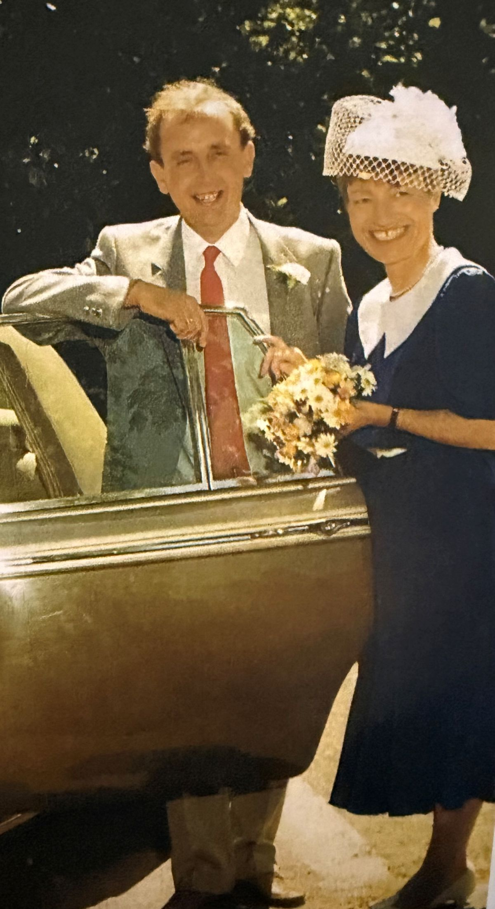
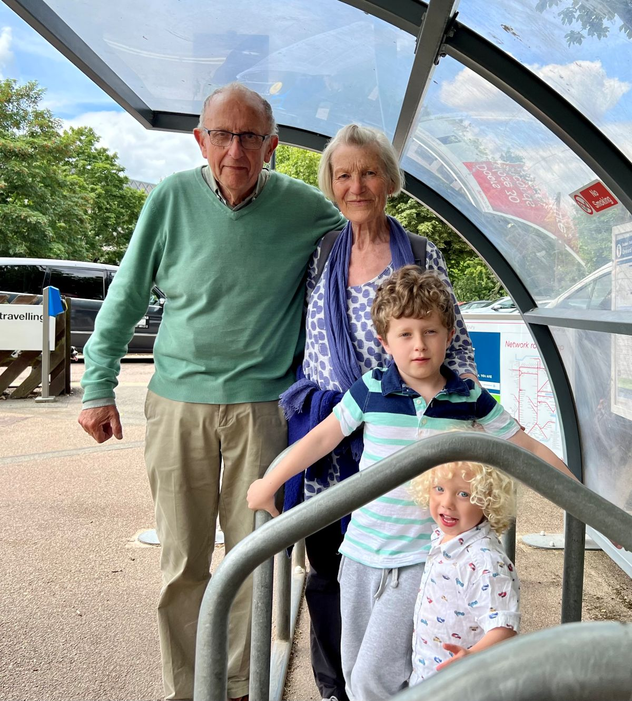
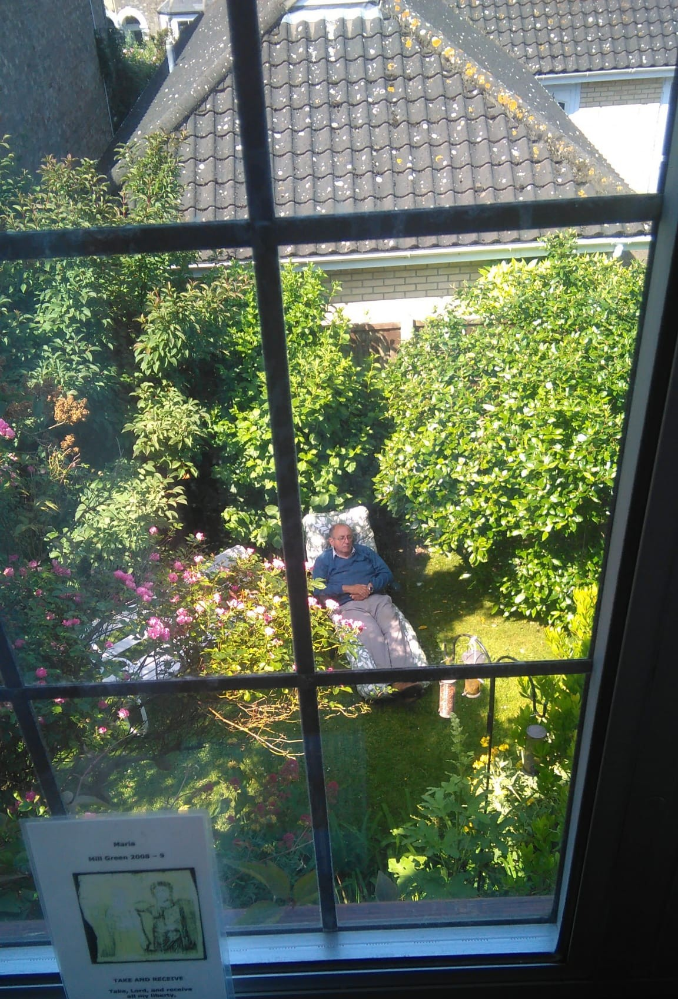
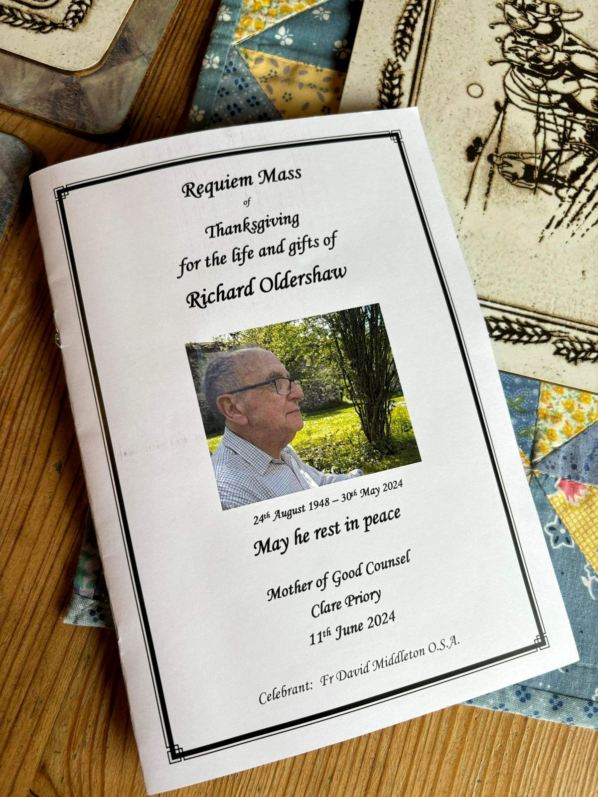

Dick Oldershaw

Richard Oldershaw (1948–2024) was a bookseller, civil engineer, and long-time member of the Sudbury community. He and his wife Maria owned and ran the Gainsborough Bookshop in Sudbury, Suffolk for almost twenty years, where they served local readers and visitors with a wide range of books and a welcoming independent bookshop.
Dick was born in London in 1948 and educated at Highgate School before studying civil engineering at the University of Sheffield. After graduating he joined the engineering firm Balfour Beatty, beginning his career supervising construction on the Victoria Line of the London Underground. His work then took him around the world on engineering projects in countries including Zambia, Algeria, Saudi Arabia, Dubai, and Tanzania. It was in Tanzania that he met Maria, who was working for the Irish aid organization Concern. They married in London in 1985 and later worked together in Sudan, where Dick helped supervise the construction of wells and feeding centres during a period of severe famine.
In 1986 Dick and Maria returned to the United Kingdom and bought the Gainsborough Bookshop in Sudbury, where they raised their three sons. After nearly two decades in bookselling, Dick later worked at the Institution of Civil Engineers in London before retiring.
Outside of his work, Dick had many interests. He loved gardening, genealogy, history, and walking in the countryside. Above all he was known for his kindness, calm nature, and devotion to his family.
Click any photo to view the full-size image.


